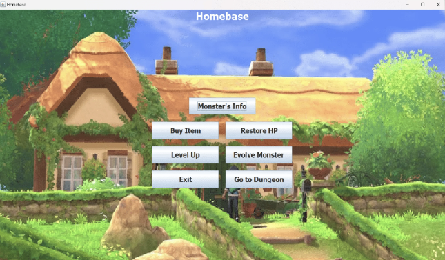

Minigames Pokemon
Game Developer
Java, OOP, GUI
Feb 2024 - Jun 2024
Project Description
This project was part of an Object-Oriented Programming (OOP) course, where the final output was the creation of a GUI for a simplified version of the Pokémon game. The game was designed to capture the essence of Pokémon while applying fundamental OOP principles, such as classes, inheritance, and polymorphism, to ensure modularity, scalability, and reusability in the code structure. This project provided hands-on experience in integrating OOP concepts into game development, focusing on both functionality and user interface design.
Homepage
A user-friendly interface where players can easily navigate through the game and access key features.

Homebase
The central hub where players can view Pokemon, purchase items, restore HP, and prepare for battles.
Process
Research & Planning
Identified the core game requirements and documented the classes needed for the system. This phase focused on applying Object-Oriented Programming concepts such as encapsulation, inheritance, polymorphism, and abstraction to define a structured and modular game architecture.
Class Diagram Design
Created a class diagram to visualize the relationships between the identified classes. This helped establish a clear object-oriented structure and provided a solid reference for implementing the game logic during development.
Development
Implemented the game logic based on the designed class structure. This phase involved coding the core mechanics of the Pokemon game and developing a graphical user interface to support user interaction with the game.
Testing & Optimization
Tested the implemented features to ensure the game functioned correctly and aligned with the project requirements. Refinements were made to improve code structure, gameplay flow, and overall user interaction, ensuring the game was stable and fully functional.